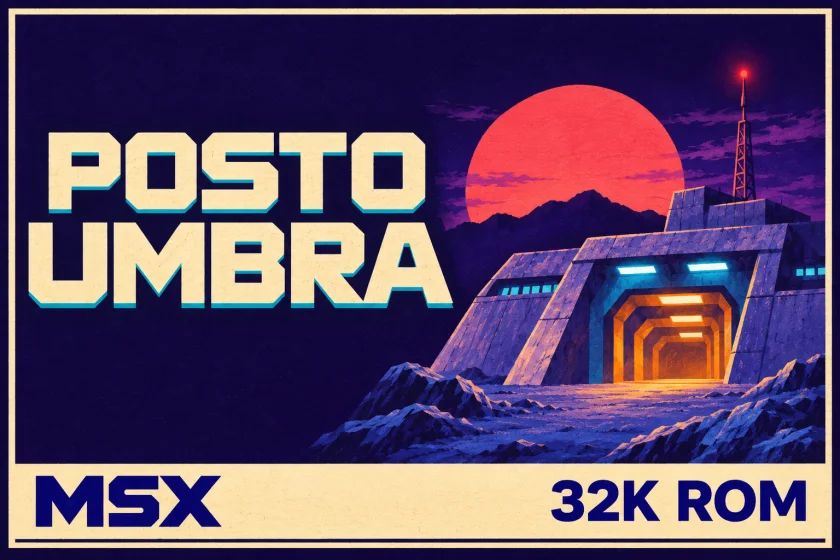

Cartucho para MSX 1 · Ação em primeira pessoa
O último sinalveio de Umbra.
Uma antena pisca no alto da serra e o rádio do posto está mudo há um dia. Encaixe o cartucho, ligue o micro e desça ao bunker. Doze setores, portões trancados e criaturas nos corredores esperam por você.
MSX 1 · 64 KiB de RAM · Cartucho de 32 KiB · Teclado ou joystick

- Setores por campanha
- 12
- Mapas no sorteio
- 21
- Dificuldades
- 3
- Armas
- 2
- Músicas originais
- 5
Demonstração na vitrine
Experimente agora.
Como na loja de informática, o micro já está ligado e o cartucho está encaixado. O WebMSX roda a ROM aqui mesmo, sem instalar nada.
A história
As luzes ainda estão acesas.
A última transmissão chegou ao anoitecer. A central ouviu o identificador do posto, três bipes e uma voz entrecortada pelo ruído. Depois, silêncio. No alto da serra, o farol vermelho da antena piscou a noite inteira.
“Os portões fecharam. As luzes ainda estão acesas.”
Você chega no fim do dia seguinte. Há energia na entrada, caixas de suprimentos no chão e criaturas entre a doca e as alas internas. Os depósitos, a fundição e o reator ainda se ligam pelos corredores de serviço. As chaves ficaram do lado de dentro.
Sua missão é recuperar o posto. Do outro lado da serra, a central espera ouvir a antena de novo. Desta vez, a voz será sua.

O jogo
Doze setores. Nenhuma partida igual.
Ação em primeira pessoa com corredores em três dimensões, num MSX 1 de 64 KiB. Cada campanha é sorteada na hora em que você aperta Espaço.
-
Campanha sorteada
São 12 setores por partida, três de cada faixa de complexidade, entre 21 mapas. Você começa em salas amplas com dois portões e termina em labirintos longos com quatro.
-
Três dificuldades
No Fácil, cada setor tem de 8 a 10 inimigos. No Normal, de 11 a 13. No Difícil, de 14 a 16, e as criaturas enxergam mais longe e perseguem mais rápido.
-
Duas armas
A pistola gasta uma carga e acerta de longe. A arma de pulso gasta duas e causa dano dobrado de perto. Saber a hora de trocar faz a munição render.
-
Missão completa
Recolha as chaves, abra os portões e elimine todos os inimigos antes de sair. Se alguém ficar para trás, o painel avisa: MATE TODOS.
-
Bússola e mapa
A bússola segue a mira e o minimapa mostra o terreno ao redor. Na pausa, o mapa do setor revela inimigos, chaves, suprimentos, portões e a saída.
-
Trilha original
Cinco músicas feitas para o chip de som do MSX. Sinal de Umbra toca na abertura, Ecos do Depósito, Forja Vermelha e Núcleo de Vidro acompanham os setores, e Voz na Serra embala o final.
Telas do jogo


Manual de instruções
Antes de descer ao bunker.
Encaixe o cartucho com o micro desligado e só então ligue. Para jogar com joystick, use a porta 1. O jogo funciona em aparelhos de 50 e de 60 Hz.
Comandos
| Ação | Teclado | Joystick |
|---|---|---|
| Começar ou avançar | Espaço | A |
| Escolher a dificuldade | ← → | Esquerda / direita |
| Avançar ou recuar | ↑ ↓ | Cima / baixo |
| Girar | ← → | Esquerda / direita |
| Andar e girar juntos | Duas setas | Diagonal |
| Atirar (segure para repetir) | Espaço | A |
| Trocar de arma | X | B + cima |
| Abrir portão | Shift | B |
| Pausar ou retomar | M | A + B |
| Ligar ou desligar o minimapa | N | B + baixo |
| Ligar ou desligar a música | T | B + direita |
| Reiniciar o setor | R | — |
Na pausa, → abre a aba Legenda e mais um toque abre Comandos. ↑ e ↓ rolam o mapa do setor.
No bunker
- Caixa amarelaOito cargas de munição.
- CoraçãoRecupera até dois pontos de vida.
- ChaveAbre o portão do setor. O último pede a chave final.
- Saída verdeLeva ao próximo setor, com todos os inimigos abatidos.
- Bruto roxoResiste a mais disparos que as outras criaturas.
Dicas
- Reiniciar com R repõe vida e munição e mantém inimigos e itens nos mesmos lugares.
- Uma campanha nova sorteia de novo os mapas, os inimigos e os suprimentos.
- A pistola economiza carga. Guarde o pulso para os brutos roxos.
- A tecla T silencia a música e mantém os efeitos sonoros.
Na prateleira
Caixa, rótulo e cartucho.
O bunker, o sol vermelho e a antena da abertura estão na capa e no rótulo, desenhados como as caixas de MSX que enchiam as prateleiras das lojas.
- Sistema
- MSX 1
- Memória
- 64 KiB de RAM
- Mídia
- Cartucho ROM de 32 KiB
- Vídeo
- 50 / 60 Hz
- Controles
- Teclado ou joystick
- Jogadores
- 1
- Gênero
- Ação em primeira pessoa
- Idioma
- Português



Distribuição livre
Leve o Posto Umbra para casa.
Grave a ROM num cartucho e jogue num MSX 1 de verdade, com 64 KiB de RAM, ou carregue o arquivo em qualquer emulador.